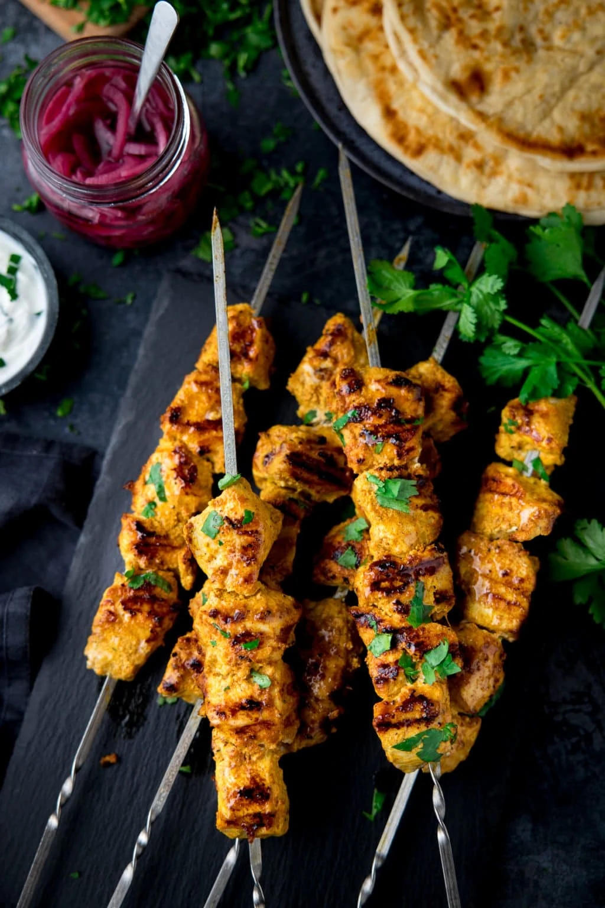

Chicken Tikka Kebabs

Description
Kebab recipes are fantastic to make for meals during the warm weather months. They take very little time to prep and they cook up quickly, but even better, you grill them outdoors, so your kitchen stays cool! They’re versatile, too; you can customize the ingredients for the skewers based on what you have on hand.
Kebab recipes are fantastic to make for meals during the warm weather months. They take very little time to prep and they cook up quickly, but even better, you grill them outdoors, so your kitchen stays cool! They’re versatile, too; you can customize the ingredients for the skewers based on what you have on hand.
Ingredients
- 150ml pot low fat natural yogurt
- 2 tbsp tikka masala paste
- 700g skinless, boneless chicken breasts , cut into chunks
- ½ cucumber , chopped
- large tomato , chopped
- 1 green chilli , seeded and finely chopped
- 1 small onion , finely sliced
- 4 tbsp roughly chopped fresh coriander
- 8 soft flour tortillas wraps or chapatis
Steps
- Mix the yogurt with the curry paste in a large bowl. Add the chicken, season, then stir really well. Cover and leave for 30 minutes at room temperature to give the spices time to flavour the chicken (or make ahead and chill for several hours or overnight).
- Make the salad before you start to cook the kebabs. Simply mix together the cucumber, tomatoes, chilli, onion and coriander. Season lightly, then cover until you’re ready to serve with the meal.
- Preheat the grill or barbecue. Push the chicken onto 8 metal or wooden skewers. Grill or barbecue the kebabs for 8-10 minutes, turning them frequently. At the same time, warm the tortillas or chapatis on one side of the barbecue, wrapping them in foil. Serve two kebabs per person, with two tortillas or chapatis and plenty of salad.